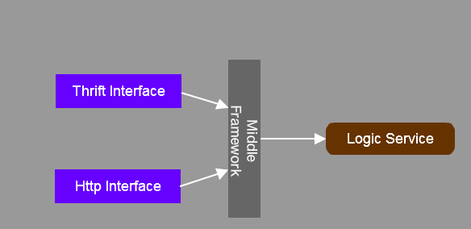
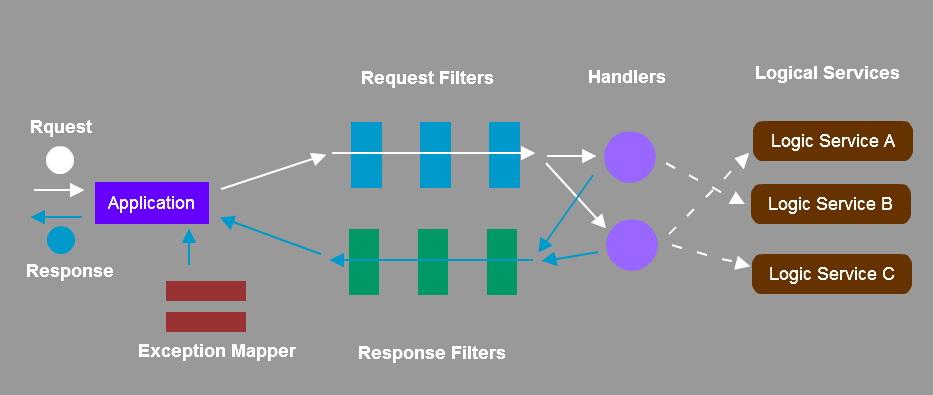
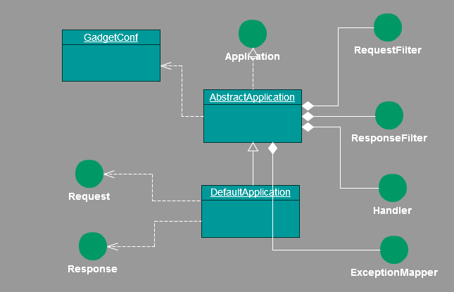

目前logging2.0的collector使用了thrift进行了网络通信。实现上紧密耦合了thrift,以后扩展上很难，逻辑代码并没有和thrift的实现很好的隔离。 为了以后的协议扩展和协议替换或能够支持多种协议接口，并又很好的重用逻辑代码，达到解耦的目的，需要一个中间层框架。
借鉴现有的Struts2, Jersey, SpringMVC, Play等web框架的实现，他们都是基于HTTP协议，使用command模式处理请求的框架。但我们需要一个与协议无关， 通用的处理 request/response的框架。



public void testGadget() throws Exception {
GadgetConf gadgetConf = new GadgetConf();
gadgetConf.setPackages("com.ctrip.freeway.gadget.a");
gadgetConf.getTaskIntervals().put("gadget.task.TaskDemo.interval", 3);
final Application application = new DefaultApplication(gadgetConf);
int n = 10;
Thread[] threads = new Thread[10];
for (int i = 0; i < n; i++) {
Thread thread = new Thread() {
@Override
public void run() {
for (int l = 0; l < 100; l++) {
Request<Integer> request = RequestBuilder.buildRequest();
request.setHeader(Headers.HOST.getCode(), "xingchaowang.ctrip.com");
request.setHeader(Headers.IP.getCode(), "192.168.1.1");
request.setHeader(Headers.COMMAND.getCode(), "add");
request.setBody(20);
System.out.println(Thread.currentThread().getId() + "\t:" + "request[" + 20 + "]");
Response<Integer> response = application.handle(request);//处理请求
System.out.println(Thread.currentThread().getId() + "\t:" + "response[" + response.getBody() + "]");
}
}
};
thread.start();
threads[i] = thread;
}
for (Thread thread : threads) {
thread.join();
}
Thread.sleep(12000);
}
GadgetConf gadgetConf = new GadgetConf();
gadgetConf.setPackages("com.ctrip.freeway.gadget.a");
Application application = new DefaultApplication(gadgetConf);
Response handle(Request request) 负责接收请求并返回响应
private List<Header> headers = Lists.newArrayList();
private T body;
APPID("appId"),
IP("ip"),
HOST("host"),
COMPRESS("compress"),
SERIALIZE("serialize"),
COMMAND("command");
public interface RequestFilter {
void filter(Request request);
}
public interface ResponseFilter {
void filter(Response response);
}
public class AFilter implements RequestFilter, ResponseFilter {
private Logger logger = LoggerFactory.getLogger(this.getClass());
ThreadLocal<Long> start = new ThreadLocal<Long>();
@Override
public void filter(Request request) {
logger.debug("request");
start.set(System.currentTimeMillis());
}
@Override
public void filter(Response response) {
logger.debug("response");
logger.info("Cost:" + (System.currentTimeMillis() - start.get()));
}
}
框架中还内嵌了一个计划任务的框架，很方便的创建计划任务，并通过配置配置任务的执行策略
public interface Task extends Runnable{
}
public class TaskDemo implements Task {
private Logger logger = LoggerFactory.getLogger(TaskDemo.class);
private int count = 0;
@Override
public void run() {
logger.info("No. " + (++count));
}
}
GadgetConf gadgetConf = new GadgetConf();
gadgetConf.setPackages("com.ctrip.freeway.gadget.a");
gadgetConf.getTaskIntervals().put("gadget.task.TaskDemo.interval", 3);
final Application application = new DefaultApplication(gadgetConf);
private String packages;
private String objectFactory;
private Map<String, Integer> taskIntervals = Maps.newConcurrentMap();
public interface ObjectFactory {
<T> T getInstance(Class<T> clazz) throws Exception;
}